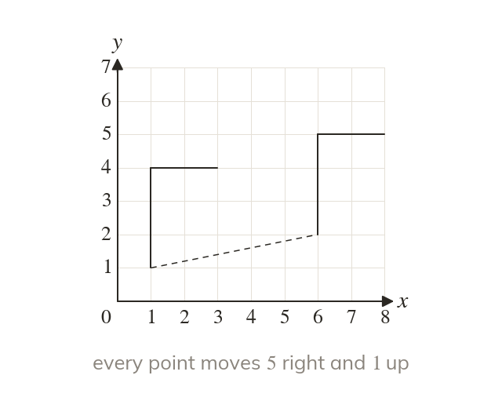
A translation slides a shape
A translation moves every point the same distance in the same direction. The image is congruent to the object and faces the same way.
A sliding door, a chess move and a character crossing a game screen all slide without turning. Two numbers are enough to say exactly where each one goes.
Work down the page at your own pace. Write every answer in your book first, then click to check it.
Read each card, then follow the worked examples one step at a time.

A translation moves every point the same distance in the same direction. The image is congruent to the object and faces the same way.
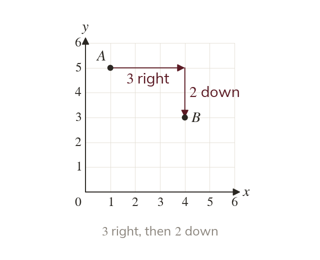
A column vector puts the move across on top, up or down below. So means right and down.
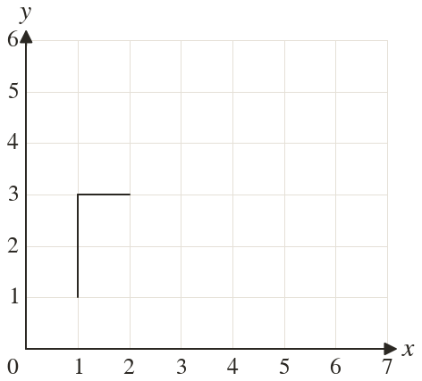
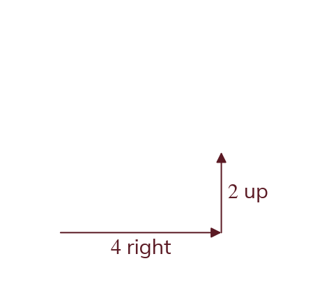
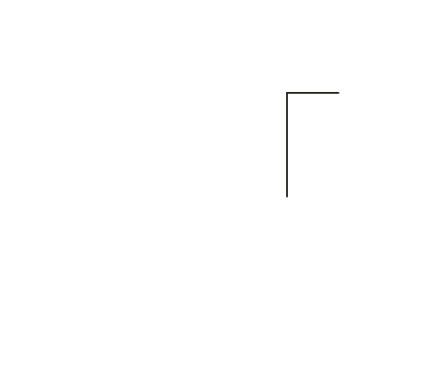
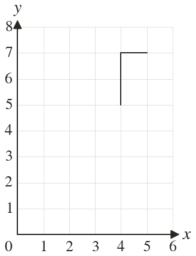
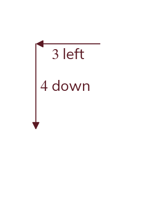
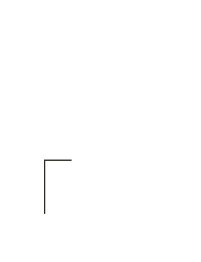
Pick an answer. If it's wrong, the feedback tells you which mistake it was.
Printable worksheet — the questions with room to work.


Read each card, then follow the worked examples one step at a time.
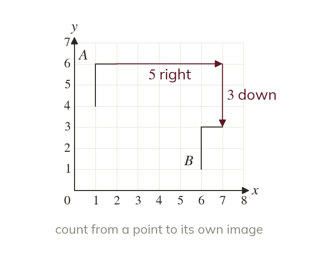
Count the vector from a point to its own image. Go across first, then up or down. Never count from the image back.
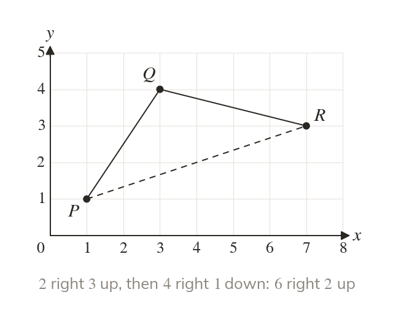
Two translations one after the other make a single translation. Add the two top numbers, then add the two bottom numbers.
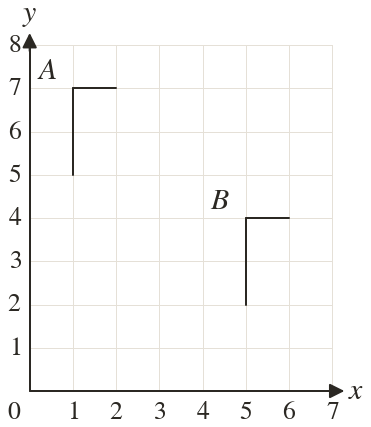
Pick an answer. If it's wrong, the feedback tells you which mistake it was.
Finished? Next lesson: 10.14.2 Reflecting in a Mirror Line.
Log in, then search for a code to practise that skill.